实时导航介绍
CAT监控数据实时数据是以小时为单位，如果当前报表是表示5月7号10点- 11点的数据报表，导航链接表示为：
1. -1d就是表示5月6号10点-11点的数据（上一天这个小时数据）
2. -1h就是表示5月7号9点-10点的数据 （上一个小时数据）
3. +1h就是表示5月7号11点-12点的数据 （下一个小时数据）
4. +1d就是表示5月8号10点-11点的数据 （下一天这个小时数据）
注：如果-1h、-1d超过了当前系统时间，直接跳转到最新的一个小时实时数据。
历史导航介绍
点击导航中间的“History Mode”便可进入相应的历史报表界面。
历史报表目前分为三类：日报表、周报表、月报表。当首次选择day、week、month时，默认为当前最近的一天、一周、一个月。以2012年6月28日14：50为例：
① 当选择day时，出现的历史报表则为2012-06-28 00:00:00 to 2012-06-29 00:00:00。可以通过-1d和+1d增加一天或者减少一天。如以前实时报表一样，如果+1d时，超出了当前的最大日期，则默认为当前最近的一天。
② 当选择week时，则出现的历史报表为：2012-06-25 00:00:00 to 2012-07-03 00:00:00。（周报表以七天为一周期，默认为上周六到本周星期五）可以通过-1w和+1w增加一天或者减少一周。如以前实时报表一样，如果+1w时，超出了当前的最大日期，则默认为当前最近的一周。
③ 当选择month时，则历史报表的为：2012-06-01 00:00:00 to 2012-07-01 00:00:00。可以通过-1m和+1m增加一天或者减少一月。如以前实时报表一样，如果+1m时，超出了当前的最大日期，则默认为当前最近的一月。
Logview总体介绍
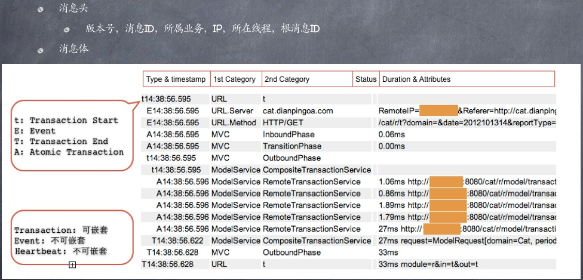可视化Logview
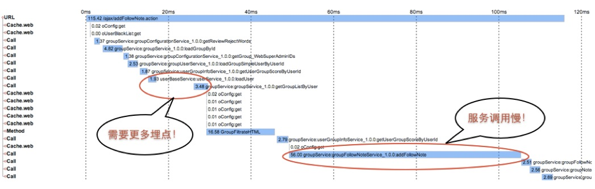分布式Logview
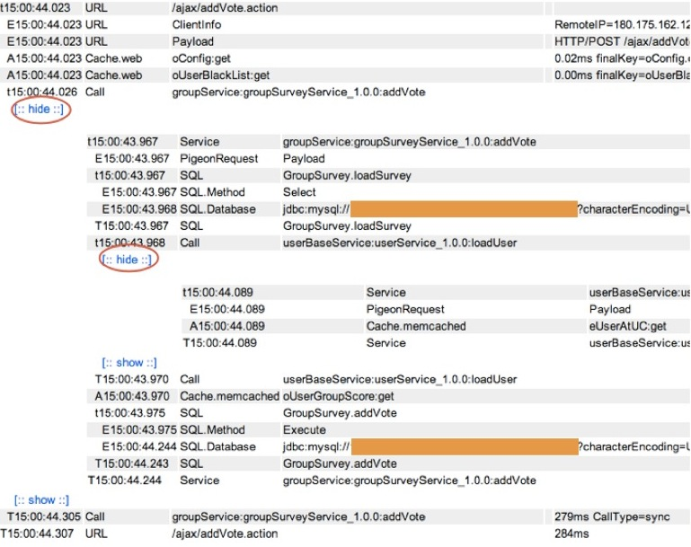Transaction
a）Tansaction元素包括开始时间、结束时间、类型（type）、名称（name）、状态、处理时间、以及记录的数据（data）。
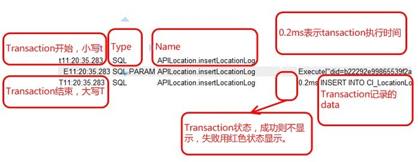b）Transctio成功状态默认不显示，下图就是失败状态，用红色表示，此状态一般记录为异常。
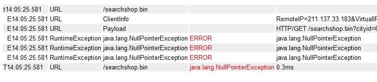c）Transaction是有执行时间的，它里面可以嵌套其他的Transaction，Event。
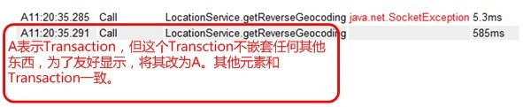Event
Event元素包括开始时间、类型（type）、名称（name）、状态以及数据（data）。
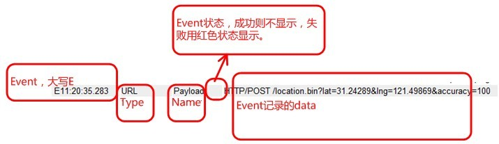Heartbeat
Heartbeat元素包括开始时间、类型（type）、名称（name）、状态以及数据（data）。
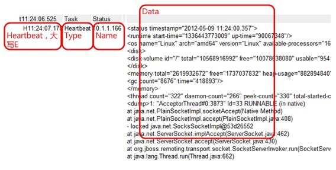Transaction实时报表
- 一段代码运行时间、次数，比如URL、Cache、SQL执行次数和响应时间
Event实时报表
- 一行代码运行次数，比如出现一个异常
Problem实时报表
- 根据Transaction\Event数据分析出来系统可能出现的异常，包括访问较慢的程序等
Heartbeat实时报表
- JVM内部一些状态信息，Memory，Thread等
Dependency实时报表
- 系统之间实时调用数据信息，包括远程服务、数据库、缓存等
Metric实时报表
- 业务监控报表
Matrix实时报表
- 一个请求调用链路统计（一次请求中调用多少次SQL、PRC、Cache等）
Cross实时报表
- SOA系统用关于RPC调用的报表(支持粒度服务、IP、方法)
State实时报表
- CAT自身状态监控，包括处理消息数、丢失消息
Storage实时报表
- 数据库以及CACHE状态监控，包括访问量，访问延时，错误量，长时间访问量等
Storage实时报表
功能：监控一段代码运行情况：运行时间统计、次数、错误次数等等。系统默认的有URL、Cache、SQL、PigeonCall、PigeonService
由于计算95line需要数据较多，为了减少内存开销，系统做了一些优化，在单个小时内某一台机器，95Line误差是1ms，但是合并成1一天，1周，1个月误差较大（数据仅供参考）
a）Type统计界面
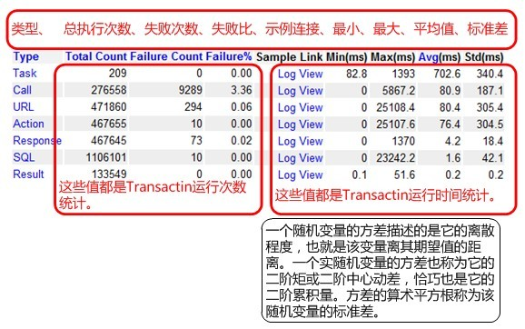b）Name统计界面
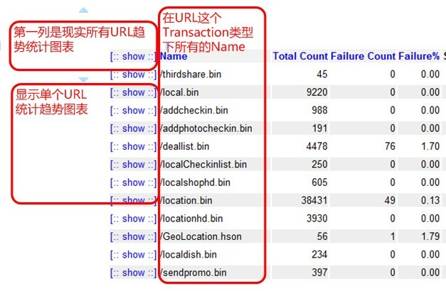c）一个小时内详细指标统计
1. Duration Distribution表示transaction的执行时间分布，这个图可以看出，大部分shopcheckin是在16-64毫秒完成，还有很少部分在512-1024毫秒完成。
2. HitOverTime、Averager Duration Over Time,Failures Over Time 纵轴都是以5分钟为单位，HitOverTime表示5分钟内的访问次数。
3. Averager Duration Over Time表示5分钟内的平均处理时间。
4. Failures Over Time表示5分钟内的Transaction失败次数。
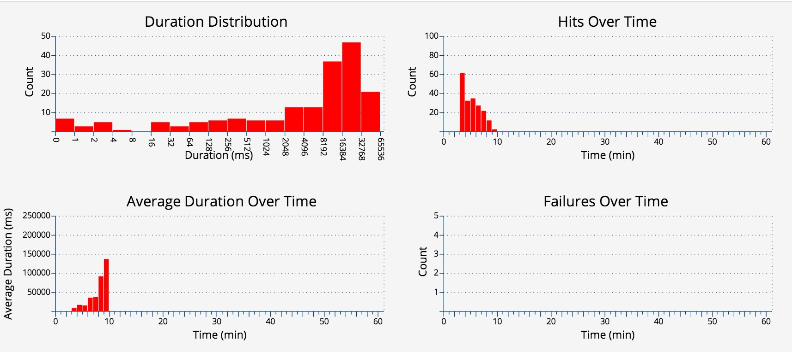Transaction历史统计报表
a）Transaction\Event月报表支持每天的趋势图，以天为单位,如下图
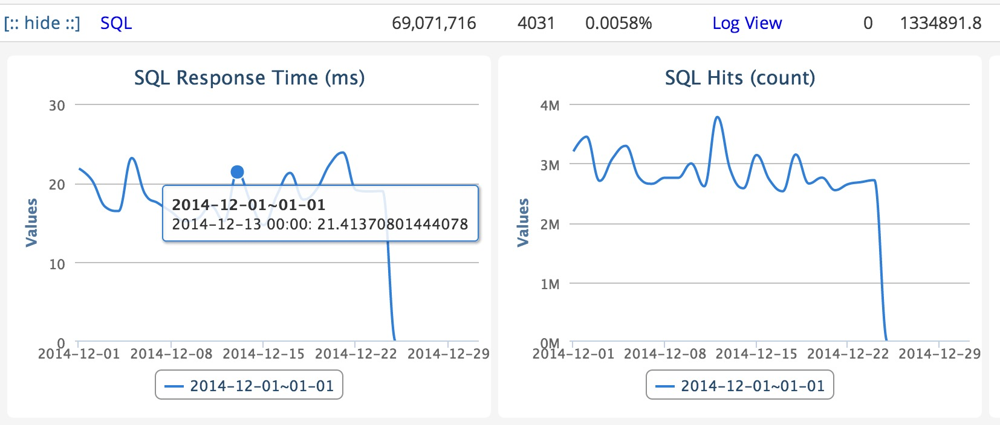b）Transaction\Event报表日报表、周报表支持同比、环比对比,时间精度为5分钟
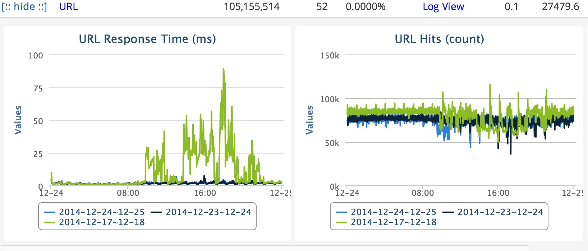Event实时报表
功能：记录程序中一个事件记录了多少次，错误了多少次。相比于Transaction，Event没有运行时间统计。
a）Type统计界面
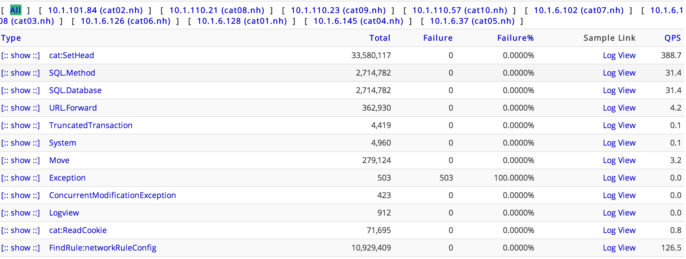b）Name统计界面
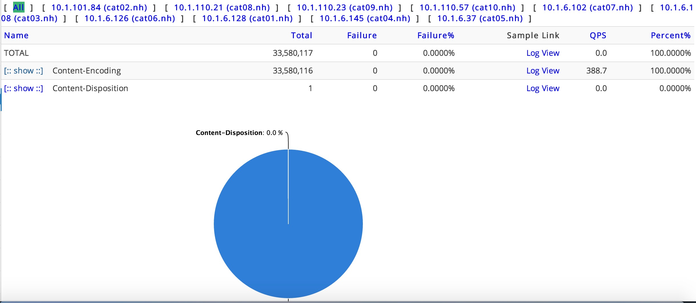c）一个小时内详细指标统计
1. HitOverTime、Averager Duration Over Time,Failures Over Time 纵轴都是以5分钟为单位，HitOverTime表示5分钟内的访问次数。
2. Failures Over Time表示5分钟内的Transaction失败次数。
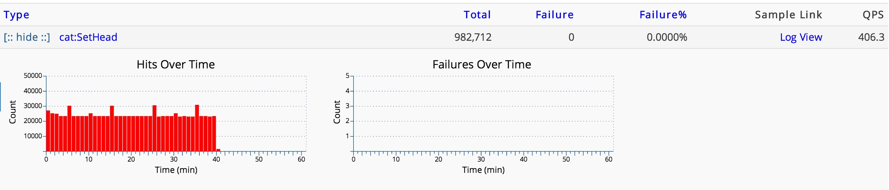
Event历史报表
a）Transaction\Event月报表支持每天的趋势图，以天为单位,如下图
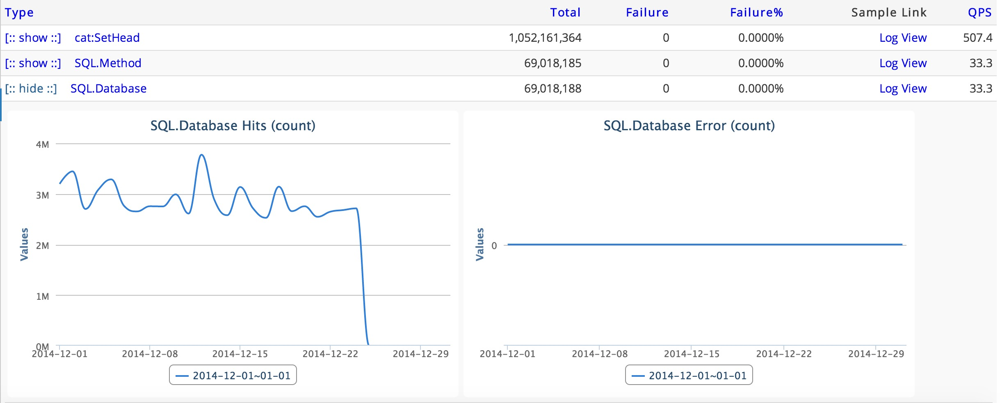b）Transaction\Event报表日报表、周报表支持同比、环比对比,时间精度为5分钟
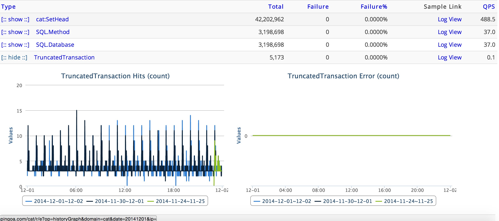Problem功能介绍
Problem记录整个项目在运行过程中出现的问题，包括一些错误、访问较长的行为。Problem的类型如下：
| error | Log4j记录的错误异常 |
| call | 表示在远程调用中transaction中出错 |
| sql | 表示在数据库的调用中transaction中出错 |
| url | 表示在url请求中调用transaction中出错 |
| failure | 业务程序Transaction的失败(除了call\sql\url之外) |
| heartbeat | 心跳消息 |
| long-url | 执行慢的url请求（可以进行进行时间筛选） |
| long-service | 执行慢的service请求（可以进行进行时间筛选） |
| long-sql | 执行慢的sql请求（可以进行进行时间筛选） |
Problem实时报表
All的错误界面
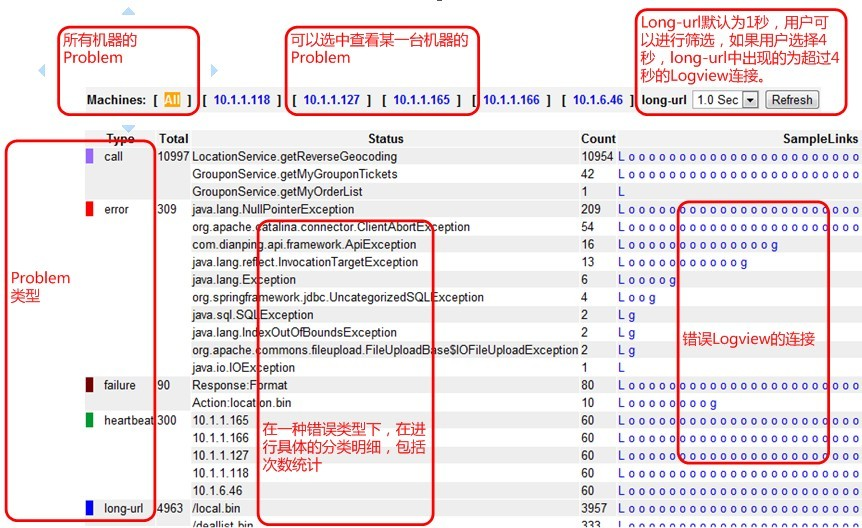错误一个小时内的实时趋势图
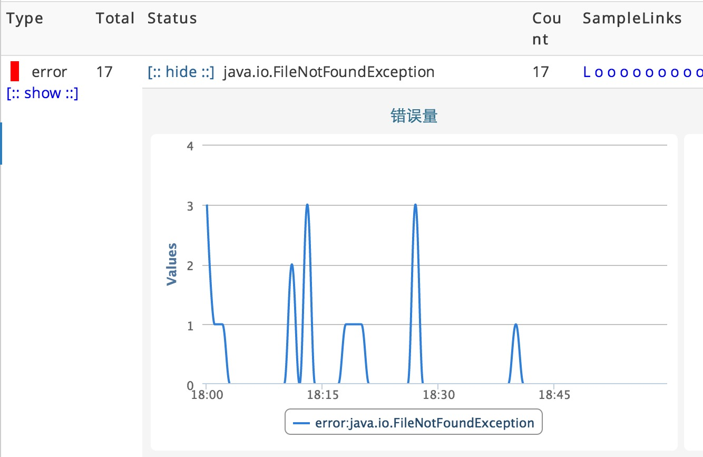点击机器IP，进入某一台机器出现的具体问题，这个包括了All中出现的所有错误统计之外，还增加了以分钟和线程为单位的错误分布图，具体如下：
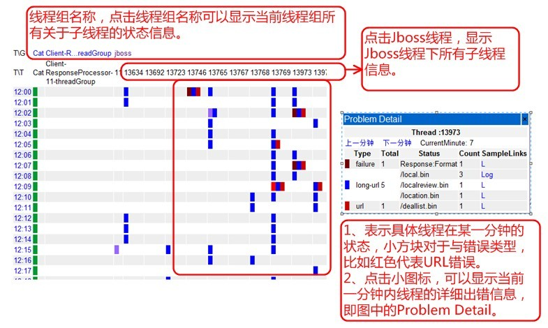Problem历史报表
1）在选择了特定的域、报表类型、时间和IP之后，点击[:: show ::] 查看某一Type下的Problem出现次数的分布图。(当前这一天、上一天、上周这一天)
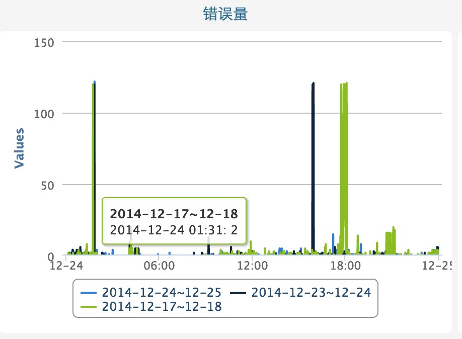2）进一步，可以查看该Type下，某个Status的Problem出现次数的分布图。(当前这一天、上一天、上周这一天)
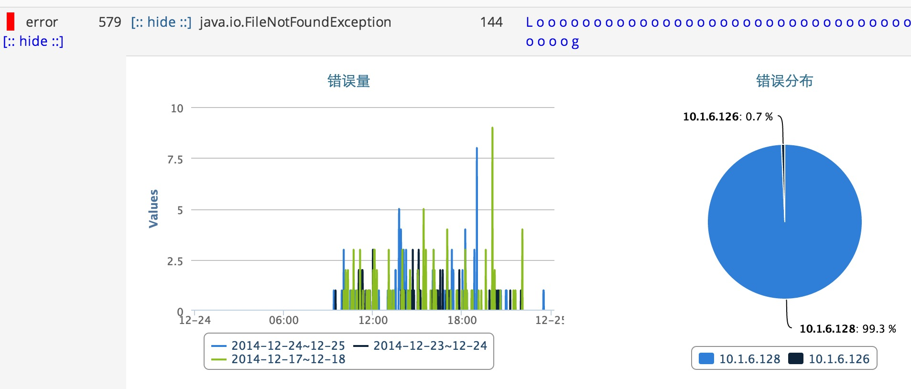Heartbeat实时报表
Heartbeart是CAT客户端一分钟一次向服务器发送自身的状态信息。Machine是当前项目下所有的部署机器。Heartbeat包括：
Thread信息包括
| Active Thread | 系统当前活动线程 |
| Daemon Thread | 系统后台线程 |
| Total Started Thread | 系统总共开启线程 |
| Started Thread | 系统每分钟新启动的线程 |
| Cat Started Thread | 系统中CAT客户端启动线程 |
| Pigeon Started Thread | 系统中Pigeon客户端启动线程数 |
System Info信息包括
| NewGc Count | 新生代GC次数 |
| OldGc Count | 旧生代GC次数 |
| System Load Average | 系统Load详细信息 |
Memery Info信息包括
| Memory Free | 系统memoryFree情况 |
| Heap Usage | Java虚拟机堆的使用情况 |
| None Heap Usage | Java虚拟机Perm的使用情况 |
Disk Info信息包括
| /根的使用情况 |
| /data盘的使用情况 |
Cat Info信息包括
| Cat每分钟产生消息数 |
| Cat每分钟丢掉的消息数 |
| Cat每分钟产生消息大小 |
Cross实时报表
统计粒度支持项目、具体某一IP、具体的服务方法
统计参数包括：访问量，错误量，响应时间，QPS
客户端调用
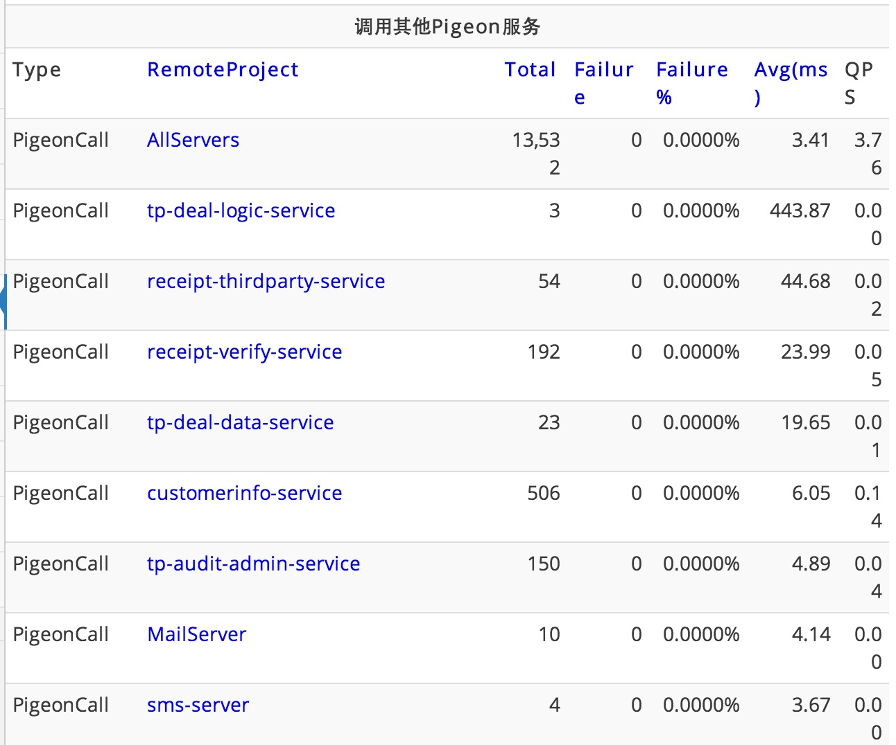服务端调用
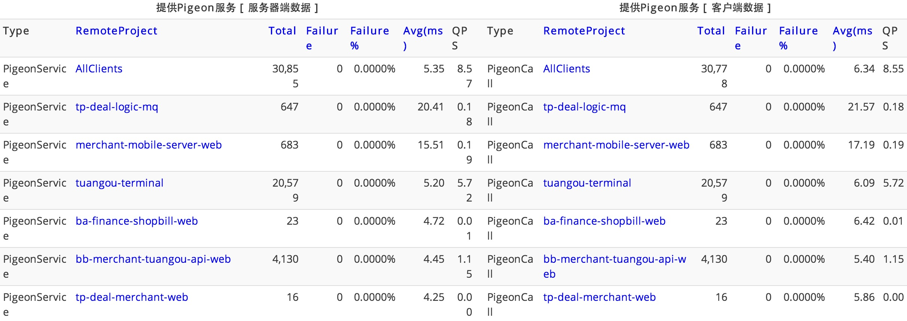Matrix实时报表
一次请求（URL、Service）中的调用链路统计，包括远程调用、sql调用、缓存调用
Ratio表示访问次数，Min是最少，Max是最大，Avg是平均
Cost表示时间消耗，Min是最少，Max是最大，Avg是平均
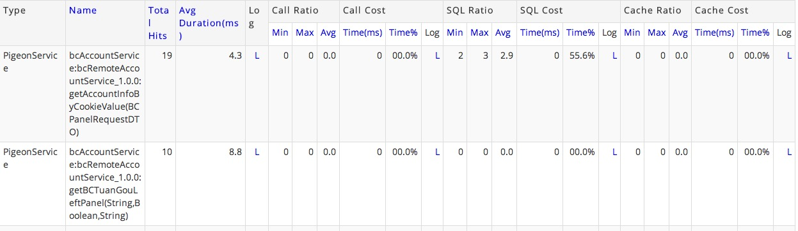调用链路排行
包括远程调用、sql调用、缓存调用最多排行
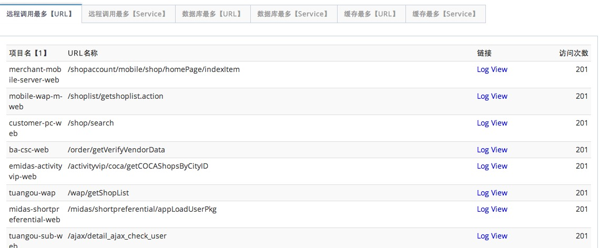Business实时报表 访问链接
公司核心业务指标监控
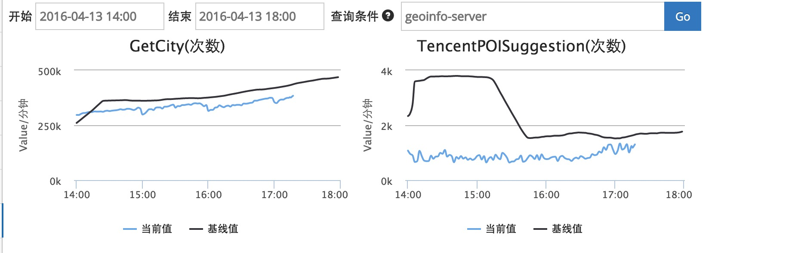输入时间，查询条件，即可查看业务指标报表。查询条件可以是domain，也可以是标签名称，其中标签均以TAG_开头。
“当前值”表示当前实际值，“基线值”表示根据历史趋势算出来当天的基准线
自定义metric配置 配置链接
支持自定义metric，自定义metric指对多个打点得到的指标进行四则运算，得到一个新的metric。
配置方法：
输入domain，查询 -> 点击新增，进入配置页面 -> 填写自定义metric的信息，在规则配置栏中填写四则运算规则 -> 配置完成后，即可在对应domain的报表中看到该metric的报表。

一个例子：
应用打点：
在应用shopweb的某段代码中，加入如下打点：
Cat.logMetricForCount("success");
Cat.logMetricForCount("total", 3);
自定义配置：
${shopweb,success,COUNT} / ${shopweb,total,COUNT}
表示shopweb下名为success,类型为COUNT的值除以shopweb下名为total，类型为COUNT的值，用于表示成功率。
最终shopweb这个domain下，business报表会有三张图，表示的指标分别为success，total，以及计算出的成功率。
标签配置：配置链接
每个tag节点表示一个标签，tag下可以有多个business-item,每个business-item表示一个metric项，其中domain为应用名，item-id为指标名称。
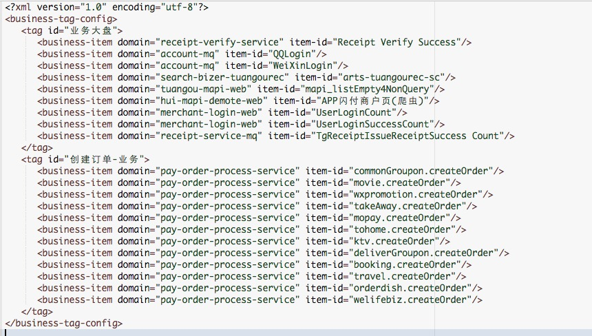
Dependency实时报表
| 时间统计粒度 | 分钟 |
| 形状：圆形 | SOA的一个服务或者一个Web |
| 形状：矩形 | 数据库一个实例 |
| 形状：菱形 | 缓存一种集群（MemoryCached） |
| 状态：红色 | Error |
| 状态：黄色 | Warning |
| 状态：绿色 | OK |
| 浮层 | 点击节点可以直接查询这一分钟内这个节点的详细状态 |
应用监控大盘
把所有核心项目用监控大盘方式展示，能全局看到项目目前问题。
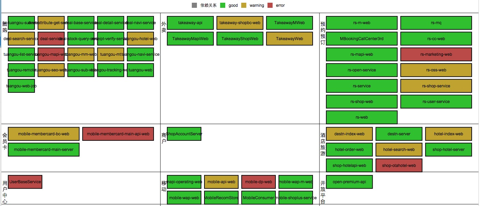 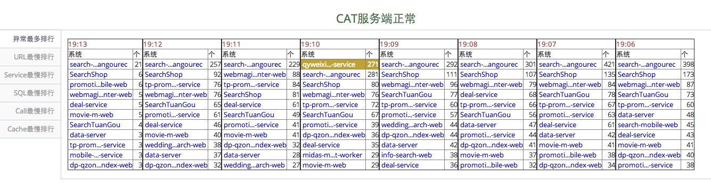Storage实时报表
功能：监控一段时间内数据库、Cache访问情况：各种操作访问次数、响应时间、错误次数、长时间访问量等等。
长时间访问定义：操作响应时间超过1秒（数据库），操作响应时间超过50毫秒（cache）